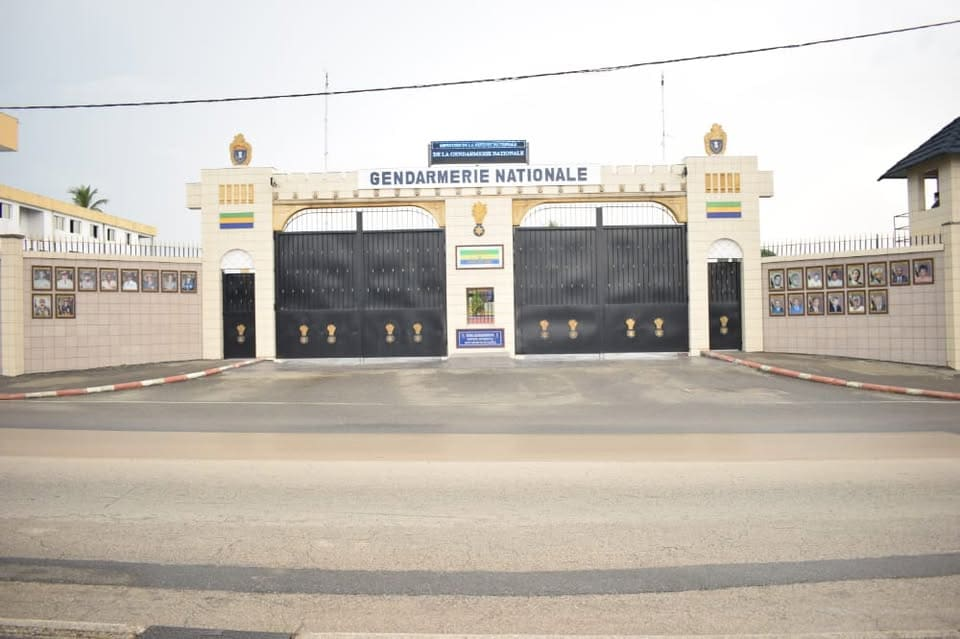
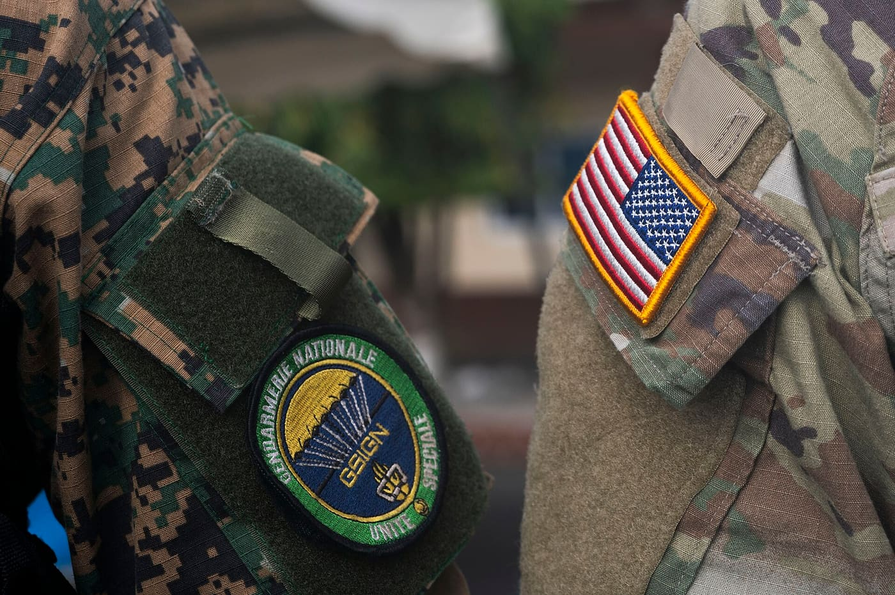
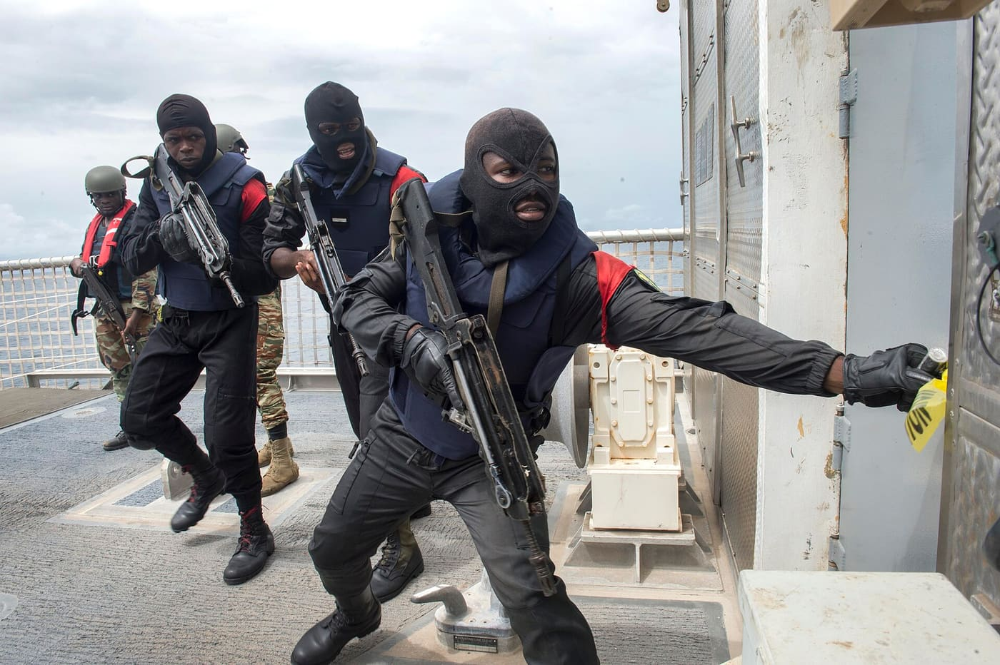
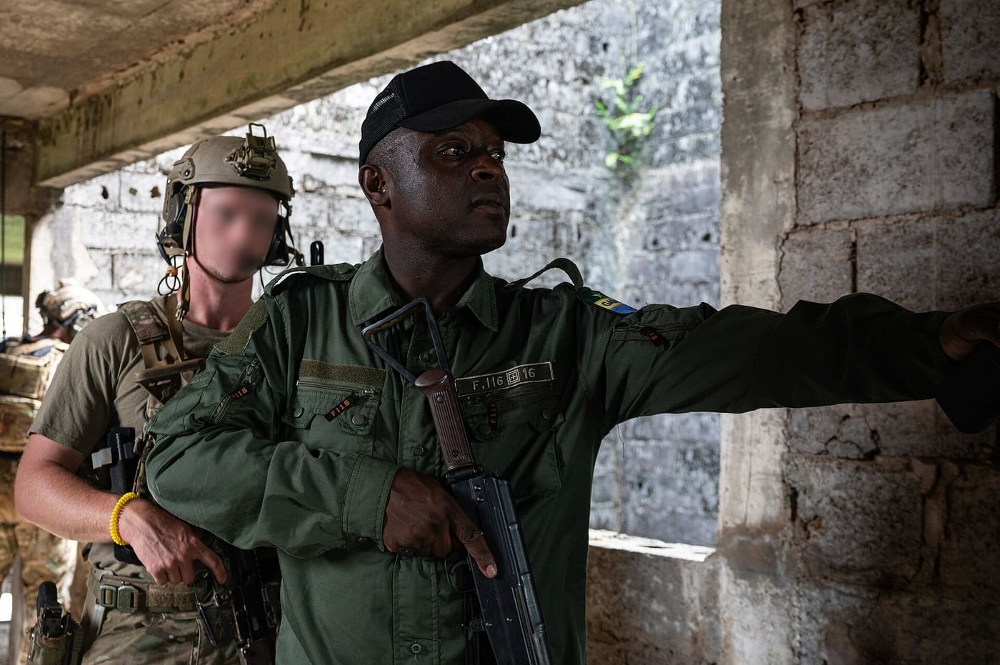
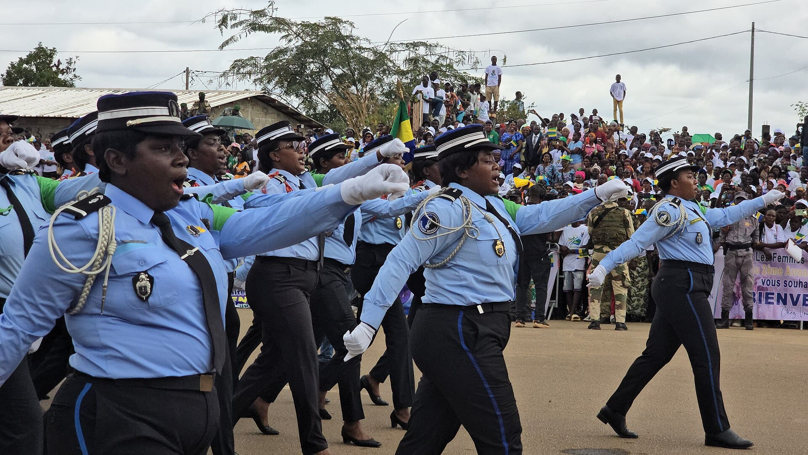
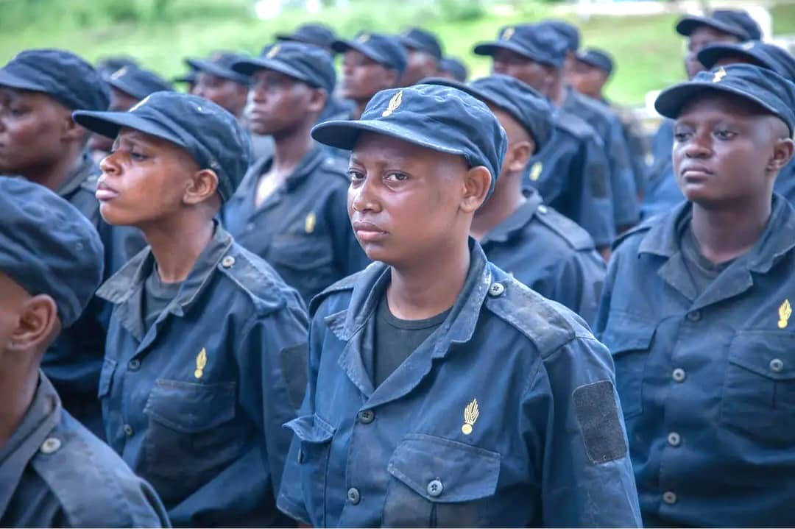
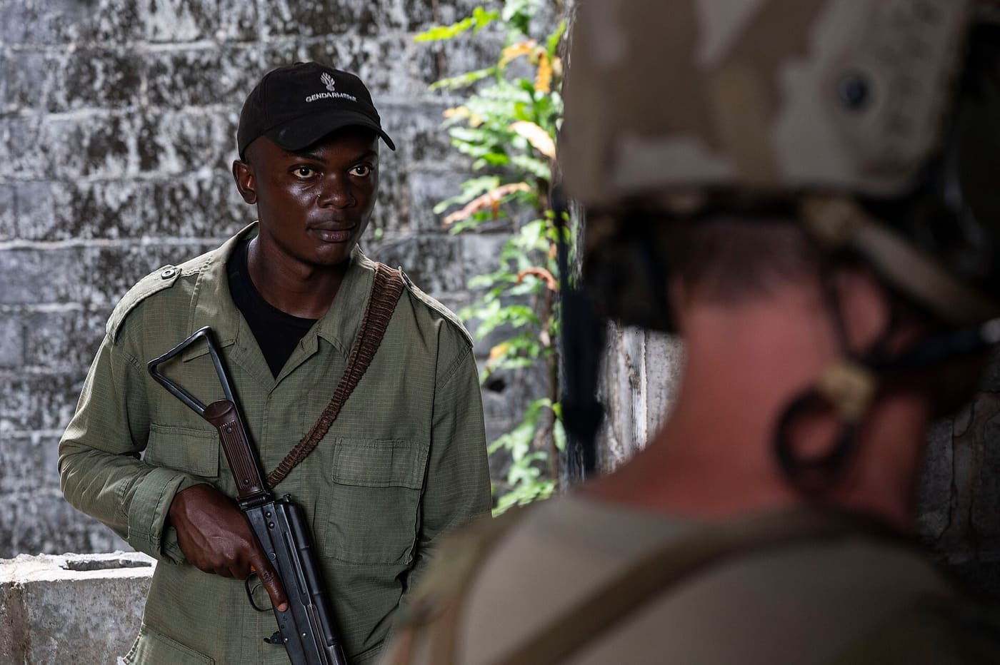

Maquette de proposition — ce site n'est pas le site officiel de la Gendarmerie nationale. Les services marqués « démonstration » utilisent des données fictives.
Force militaire chargée de la sécurité intérieure depuis 1960, la Gendarmerie nationale veille sur les villes, les campagnes et les routes du Gabon. Retrouvez ici ses missions, ses actualités et les services utiles aux citoyens.
Une force militaire au service de la sécurité des citoyens
La Gendarmerie nationale gabonaise est une force militaire chargée de missions de sécurité intérieure. Créée en 1960, à l'indépendance, elle a pris la suite du détachement de gendarmerie de Libreville fondé en 1929.
Elle relève du Président de la République, chef suprême des armées, et du ministère de la Défense nationale. Son siège est à Libreville. Elle couvre l'ensemble du pays, notamment les zones rurales et les axes routiers, grâce à son maillage de légions et de brigades.
En 2026, elle renforce ses effectifs avec l'incorporation de 594 recrues en mars, premier contingent d'un programme de 954, et poursuit son action contre les trafics.

Le Commandement en chef de la Gendarmerie nationale, à Libreville
Haut commandement
À la tête de la Gendarmerie nationale
Deux officiers généraux incarnent l'autorité sur l'institution : le commandant en chef, qui la dirige au quotidien, et la ministre d'État chargée de la Défense nationale, qui en assure la tutelle.
Commandant en chef de la Gendarmerie nationale
Général Yves Barassouaga
À la tête de la Gendarmerie nationale depuis le 3 avril 2020, il fait de la discipline et de l'exemplarité des priorités du commandement, y compris dans la conduite des contrôles routiers. Le 24 mars 2026, il a constaté l'incorporation de 594 nouvelles recrues.
Ministre d'État, ministre de la Défense nationale
Général Brigitte Onkanowa
Officier général issue de la Gendarmerie nationale, elle est la première femme promue général de brigade dans ses rangs, en 2018. Ministre de la Défense nationale, elle exerce la tutelle sur la Gendarmerie.
La ministre de la Défense passe les troupes en revue — cérémonie d'ouverture d'Obangame Express 2024, Libreville
Nos missions
Six missions pour la sécurité de tous
La Gendarmerie assure des missions de police judiciaire, administrative et militaire sur l'ensemble du territoire national.
01
Défendre le territoire
Contribuer à la défense du territoire national, y compris dans les zones reculées et frontalières.
02
Assurer la sécurité publique
Protéger les personnes et les biens, en ville comme dans les villages, au quotidien.
03
Maintenir l'ordre
Préserver la tranquillité publique grâce à des unités de maintien de l'ordre et des escadrons blindés.
04
Faire respecter la loi
Veiller à l'application des lois et règlements, avec une exigence d'exemplarité.
05
Police judiciaire
Constater les infractions, rechercher leurs auteurs et lutter contre les trafics et l'orpaillage illégal.
06
Police administrative et militaire
Prévenir les troubles, orienter et protéger, et assurer les missions propres à l'état militaire.
Incorporation des recrues au groupement d'instruction, 24 mars 2026
Sous l'autorité du commandant en chef, l'administration centrale s'appuie sur cinq légions territoriales, qui animent les brigades territoriales réparties dans tout le pays.
LégionEst
LégionOuest
LégionCentre-Ouest
LégionNord
LégionSud
Unités spécialisées
Maintien de l'ordre
Escadrons blindés
Brigades nautiques
Brigades aériennes
Groupement spécialisé d'intervention (GSIGN) — formé notamment au combat en zone urbaine
Unités spécialisées
Des unités formées pour chaque situation
Maintien de l'ordre, escadrons blindés, brigades nautiques et aériennes, groupement d'intervention : la Gendarmerie s'entraîne pour répondre, partout et à tout moment.

Le GSIGN
Le Groupement spécialisé d'intervention est l'unité spéciale de la Gendarmerie nationale. Il s'est entraîné au combat en zone urbaine avec les forces françaises.

Action en mer
Les brigades nautiques agissent sur les eaux gabonaises. Ici, un exercice d'abordage avec la Marine, lors d'Obangame/Saharan Express 2016.

Entraînement tactique
Une unité tactique de la Gendarmerie s'entraîne à l'intervention en milieu bâti, en exercice conjoint à Libreville, en juin 2025.
Histoire
Près d'un siècle de présence au Gabon
1929
Fondation du détachement de gendarmerie de Libreville.
1960
Création de la Gendarmerie nationale à l'indépendance du Gabon.
2020
Le général Yves Barassouaga devient commandant en chef, le 3 avril.
2024
Concours de sous-officiers : 14 000 candidats, dont 10 000 à Libreville.
2026
Incorporation de 594 recrues, premier contingent d'un programme de 954.
Salle de presse
Actualités de la Gendarmerie
Opérations, recrutement et instruction : les faits marquants relayés par la presse. Chaque article renvoie vers sa source.
Recrutement
594 nouvelles recrues incorporées
Le groupement d'instruction accueille le premier contingent d'un programme de 954 recrues, appelées à renforcer les effectifs de la Gendarmerie nationale.
Défilés, cérémonies, instruction et exercices : quelques images des hommes et des femmes de la Gendarmerie nationale.

Défilé des femmes gendarmes — Tchibanga, 30 août 2025L'écusson « Gabon » à la grenade enflammée

Jeunes recrues au groupement d'instructionCérémonie militaire — Libreville, 2024

Exercice conjoint — Libreville, 2025Le Commandement en chefIncorporation des recrues — 24 mars 2026Exercice d'abordage avec la MarineEntraînement tactique — juin 2025
Sur la route
Vos droits lors d'un contrôle
Le commandement a fixé des règles strictes pour les contrôles. Les connaître, c'est se protéger — et faire reculer le racket.
1Le matricule est visibleDans le Grand Libreville, le gendarme porte son matricule militaire sur la poitrine.
2Un ordre de mission signéLe contrôle ne se fait que sur ordre de mission signé ou bulletin de service.
3Toute amende donne lieu à une quittanceElle est délivrée par le Trésor public. Aucun paiement en espèces sans reçu.
4Un doute ? AppelezPour signaler un racket : 1401, 011 73 20 36 ou 011 76 22 80.
Démonstration
Contrôle de confiance
Scannez le QR code du badge ou de l'ordre de mission, ou saisissez son code : vous voyez immédiatement si la mission est valide, à cet endroit et ce jour-là.
Mes démarches
Signaler, déclarer, suivre — en ligne
Un seul endroit pour alerter la Gendarmerie, depuis n'importe quelle province, avec un numéro de suivi.
Signaler un racketDisponible dans cette démonstration →
Pré-plainte et signalementsVol de bétail, orpaillage, trafic, violencesPhase 2
Payer une amendeMobile Money, quittance numérique du TrésorPhase 4
Suivre un dossierAvec votre numéro de suiviPhase 2
Brigade numériqueÉchanger avec un gendarme par chatPhase 2
Démonstration
Signaler un racket
Décrivez ce qui s'est passé. Votre signalement serait transmis au commandement avec un numéro de suivi.
✓
Signalement enregistré (exemple)
SR-000000
Dans la version réelle, ce numéro permettrait de suivre le traitement du dossier. Vous pouvez aussi appeler le 1401.
Recrutement
Rejoindre la Gendarmerie nationale
La Gendarmerie renforce ses effectifs : 594 recrues ont été incorporées en mars 2026, sur un programme de 954. Les candidatures se déposent aujourd'hui auprès des commandements de province et des commandants de brigade.
Se renseigner auprès de la brigade ou du commandement de province le plus proche.
Déposer son dossier à l'ouverture d'un concours ou d'une campagne de recrutement.
Passer les épreuves — en 2024, 14 000 candidats se sont présentés au concours de sous-officiers.
Intégrer l'instruction au groupement d'instruction, avant l'affectation.
Attention aux faux concours. Aucun paiement n'est demandé pour s'inscrire. Fiez-vous uniquement aux annonces officielles du commandement.
Brigades territoriales, escadrons, unités nautiques : la Gendarmerie est au plus près des habitants, jusque dans l'intérieur du pays.
EstuaireLibreville
Haut-OgoouéFranceville
Moyen-OgoouéLambaréné
NgouniéMouila
NyangaTchibanga
Ogooué-IvindoMakokou
Ogooué-LoloKoulamoutou
Ogooué-MaritimePort-Gentil
Woleu-NtemOyem
À compléter avec le commandement : l'annuaire détaillé (adresses et téléphones de chaque brigade, carte interactive) sera renseigné à partir des données officielles.
Un doute sur un contrôle ? Un racket à signaler ?
Ces trois lignes sont dédiées aux signalements de racket. Gardez-les à portée de main.